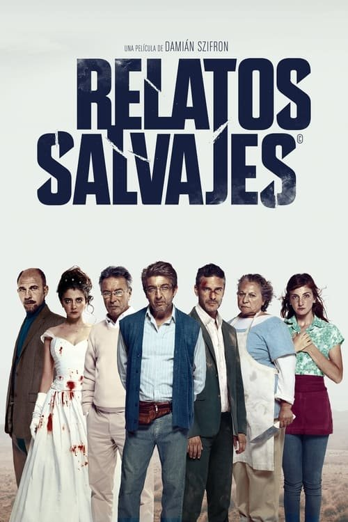

Relatos salvajes (2014)
Sinopsis Rápida
¿Qué pasaría si la presión social, la injusticia y la frustración diaria te empujaran al límite absoluto? Seis historias explosivas te mostrarán la delgada línea entre la civilización y la barbarie.
Sinopsis Detallada
Relatos salvajes es una explosiva antología de seis viñetas que exploran la naturaleza humana en su punto más extremo. Desde una traición amorosa que desencadena una venganza inesperada, hasta la indignación ante la corrupción que culmina en un acto de rebeldía, cada historia es un viaje visceral al corazón de las emociones humanas. La película no solo entretiene, sino que cuestiona las convenciones sociales y explora las consecuencias de reprimir nuestros instintos. Con una narrativa ágil y un humor negro mordaz, Relatos salvajes te dejará sin aliento y reflexionando sobre la fragilidad de la cordura.
¿Por qué tenés que verla?
- Una experiencia cinematográfica intensa y visceral que te dejará sin aliento.
- La dirección maestra de Damián Szifron crea una atmósfera única, con un ritmo impecable y un estilo visual distintivo.
- Su éxito internacional catapultó al cine argentino a la escena global y generó un impacto duradero en el género de la antología.
- Explora temas universales de frustración y la búsqueda de justicia de una manera innovadora y emocionante.
Idea Extra
Análisis comparativo de las historias: explorar las diferentes temáticas y estilos narrativos de cada relato, incluyendo un análisis de su simbolismo y el mensaje subyacente en cada una.